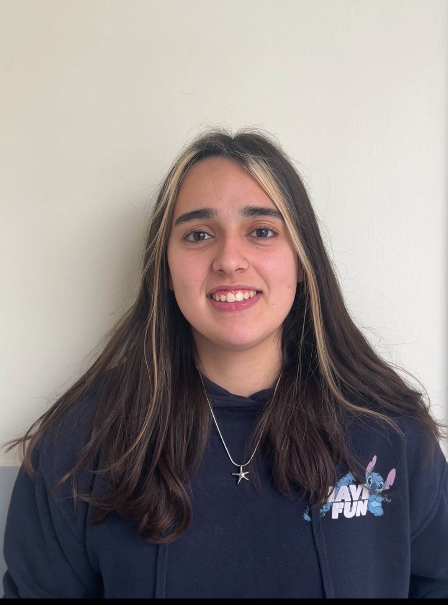
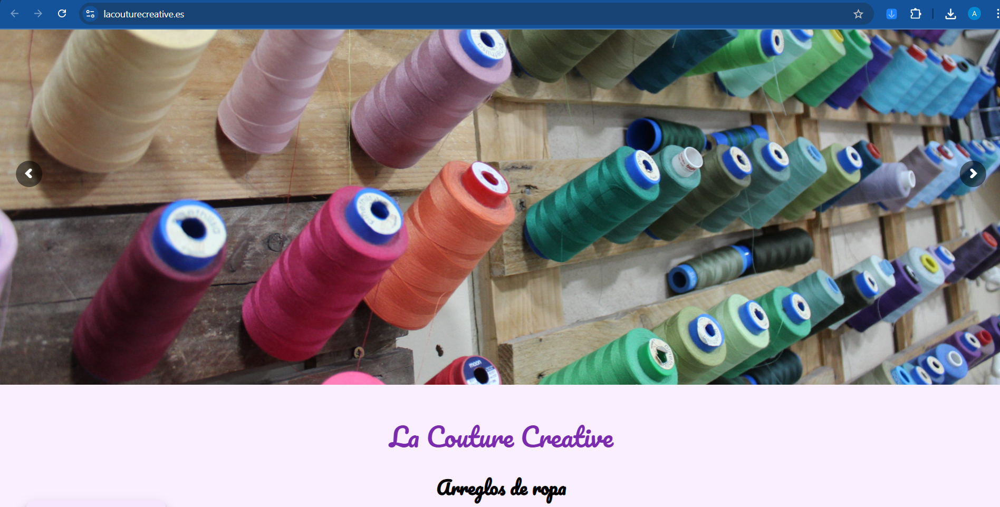
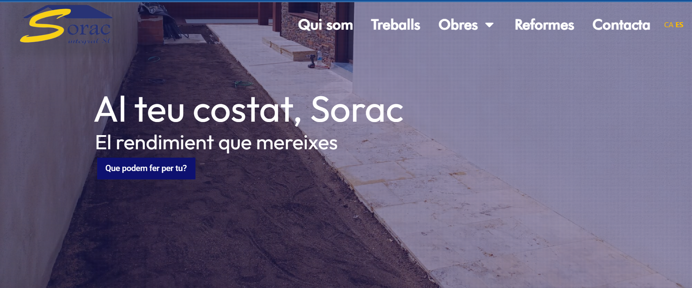
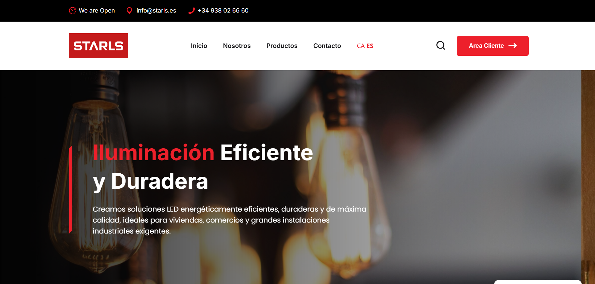
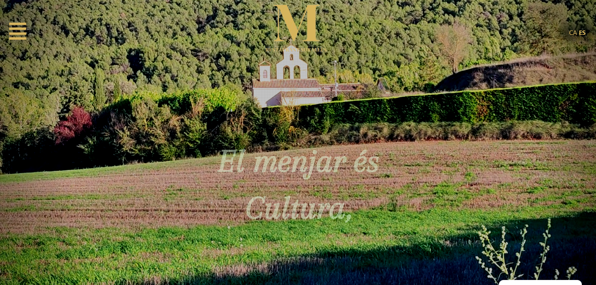

Estudios
-
Formación Profesional Grado Superior
INS Daniel Blanxart i Pedrals (DAW)
2023 - 2025 -
Formación Profesional Grado Medio
INS Daniel Blanxart i Pedrals (SMX)
2021 - 2023

INS Daniel Blanxart i Pedrals (DAW)
2023 - 2025INS Daniel Blanxart i Pedrals (SMX)
2021 - 2023Salcom Consulting
2024 - 2025
Desarrollo de aplicaciones web corporativas utilizando WordPress y maquetadores avanzados.
Implementación y monitorización de análisis web con Matomo.
Gestión directa con clientes, consultoría técnica y toma de requisitos de diseño.
Millenium Center
2022 - 2023
Diseño, estructura y despliegue de páginas web nativas utilizando VS Code.
Aplicación de lenguajes de programación estándar y lógicas orientadas a la web.
AI-Driven Work: Integración de herramientas de IA (GitHub Copilot, ChatGPT) como Pair Programmer para acelerar maquetados, optimizar algoritmos y reducir tiempos de entrega.
Proyectos desarrollados durante mi etapa en Salcom Consulting

Sitio web corporativo responsive desarrollado con WordPress, Elementor Pro y Matomo. Participé activamente en la maquetación front-end, adaptabilidad móvil e implementación de interacciones dinámicas.

Sitio web corporativo responsive desarrollado con WordPress, Elementor Pro y Matomo. Enfocado en la optimización SEO inicial, velocidad de carga y diseño adaptado a la identidad de marca.

Sitio web corporativo responsive implementado a través de WordPress. Adaptación personalizada de plantillas avanzadas y estructuración de contenido técnico.

Portal web dinámico para restauración. Integración de menús autogestionables, diseño responsive intuitivo y analítica digital mediante Matomo.
Nota: Estos proyectos fueron desarrollados durante mi etapa como profesional en Salcom Consulting. Los muestro aquí como ejemplo de mi experiencia laboral, reconociendo la propiedad intelectual de dicha entidad.

Gimnasio Web App
Interfaz moderna y fluida para la gestión de un centro deportivo. Prototipo responsive con enfoque en arquitecturas escalables de maquetación.

E-commerce ElBonVestir
Plataforma web enfocada a una tienda de ropa online. Maquetación interactiva y responsive diseñada para flujos UX fluidos.

Street Fighter Remake
Proyecto colaborativo de gran envergadura. Desarrollado utilizando Node.js, React y animaciones en vídeo para recrear dinámicas de juego reales.

Dragon Ball POO Project
Aplicación interactiva realizada en pareja enfocada en la robustez lógica y los principios de la Programación Orientada a Objetos mediante JavaScript nativo.

Sopa de Letras Interactiva
Aplicación lúdica con algoritmos dinámicos complejos para la generación de matrices de juego. Creado de manera ágil con React, HTML, CSS y JS.